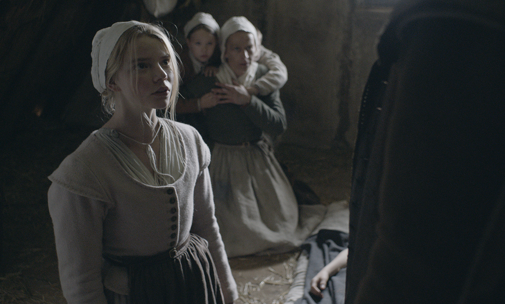

A Bruxa (2016)
Nova Inglaterra, década de 1630. O casal William e Katherine leva uma vida cristã com suas cinco crianças em uma comunidade extremamente religiosa, até serem expulsos do local por sua fé diferente daquela permitida pelas autoridades. A família passa a morar num local isolado, à beira do bosque, sofrendo com a escassez de comida. Um dia, o bebê recém-nascido desaparece. Teria sido devorado por um lobo? Sequestrado por uma bruxa? Enquanto buscam respostas à pergunta, cada membro da família enfrenta seus piores medos e seu lado mais condenável.

Confira aqui o trailer!

 Para assistir
Para assistir